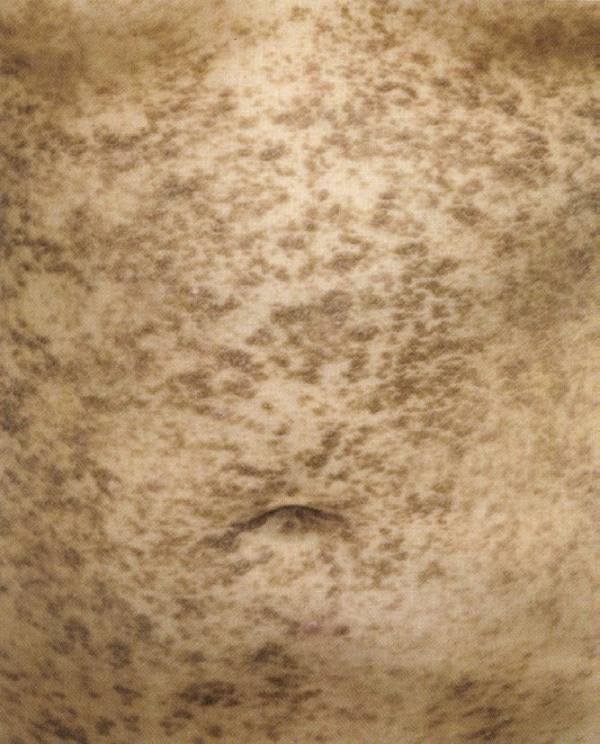
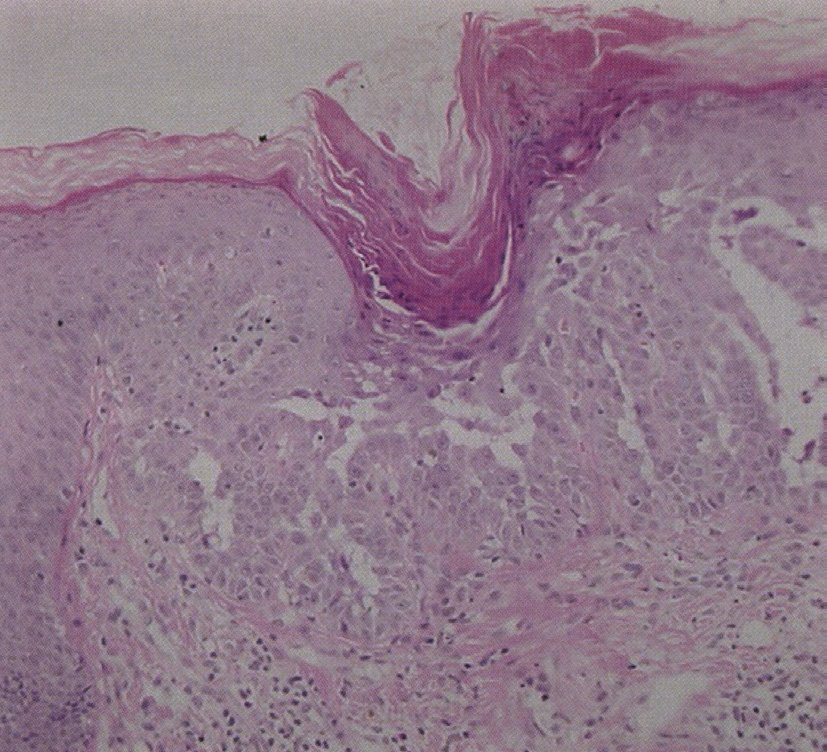
| 選択肢 | 解説 |
|---|---|
| ａ Sweet病 | 発熱と有痛性の浮腫性紅色局面が急性に多発し、真皮に好中球がびまん性に浸潤する疾患。遺伝性ではなく、家族内発症もしない。本例は発熱がなく、皮疹も1か月持続する暗褐色丘疹である。 |
| ◯ ｂ Darier病 | ATP2A2遺伝子（SERCA2をコードする）の変異による常染色体顕性遺伝の角化症。脂漏部位（頸部・腋窩・前胸部・乳房下・鼠径）に角化性の暗褐色丘疹が多発し、母娘で同じ変異が同定されている。Kaposi水痘様発疹症を反復するのもDarier病の代表的な合併症である。 |
| ｃ Kaposi肉腫 | HHV-8によって生じる血管性腫瘍。AIDS関連型では下肢・体幹・口腔に暗紫紅色の斑・局面・結節を生じる。遺伝性ではなく、脂漏部位に左右対称の角化性丘疹を作る疾患でもない。「Kaposi水痘様発疹症」とは名前が似ているだけで無関係である。 |
| ｄ 尋常性天疱瘡 | 抗デスモグレイン3抗体による表皮内（棘融解）水疱症。口腔粘膜のびらんで初発し、正常皮膚上に弛緩性水疱を生じ、Nikolsky現象陽性。病理では棘融解を認めるためDarier病と紛らわしいが、自己免疫性で遺伝性ではなく、主病変は水疱・びらんであって角化性丘疹ではない。 |
| ｅ アトピー性皮膚炎 | 瘙痒・特徴的な皮疹と分布・慢性反復性の経過が診断の3本柱。本例は「瘙痒はない」と明記されており、この時点で否定できる。なおアトピー性皮膚炎もKaposi水痘様発疹症を起こすため（Q.29）、その一点だけで飛びつかないよう注意する。 |
| 疾患 | 機序 | 臨床像 |
|---|---|---|
| 尋常性天疱瘡 | 抗デスモグレイン3（±1）抗体 | 口腔粘膜びらんで初発、弛緩性水疱、Nikolsky陽性 |
| 落葉状天疱瘡 | 抗デスモグレイン1抗体 | 浅い水疱・落屑、粘膜は侵さない |
| Darier病 | ATP2A2（SERCA2）変異・常染色体顕性 | 脂漏部位の角化性褐色丘疹、爪のV字切れ込み |
| Hailey-Hailey病〈家族性良性慢性天疱瘡〉 | ATP2C1（SPCA1・ゴルジ体のCa²⁺ポンプ）変異・常染色体顕性 | 間擦部（腋窩・鼠径・頸部）にびらん・亀裂。病理は「崩れかけたレンガ塀」様の広範な棘融解 |
| Grover病（一過性棘融解性皮膚症） | 不明（発汗・臥床が誘因） | 中高年男性の体幹に瘙痒性丘疹 |
| 疾患 | 粘膜に出る／出ない理由 | |
|---|---|---|
| 出る | 尋常性天疱瘡 | 抗デスモグレイン3抗体。Dsg3は粘膜に豊富 |
| 出る | 扁平苔癬 | 基底細胞に対するT細胞性の界面皮膚炎。粘膜上皮にも基底細胞がある |
| 出る | SJS／TEN・多形滲出性紅斑（major） | 上皮細胞のアポトーシス。粘膜上皮も同じ標的 |
| 出る | Behçet病 | 再発性アフタが主症状 |
| 出る | 膿疱性乾癬 | 地図状舌・溝状舌が診断基準の副症状 |
| 出ない | 尋常性乾癬 | 角層の異常増殖（錯角化＋Munro微小膿瘍）が本態。粘膜に角層がない |
| 出ない | 落葉状天疱瘡 | 抗Dsg1抗体のみ。粘膜ではDsg3が代償する |
| 出ない | ブドウ球菌性熱傷様皮膚症候群〈SSSS〉 | 表皮剝脱毒素の標的がDsg1。TENとの最重要鑑別点 |
| 選択肢 | 解説 |
|---|---|
| ａ 扁平苔癬 | 口腔粘膜（とくに頬粘膜）にレース状・網目状の白色線条〈Wickham線条〉を生じ、粘膜病変だけで発症することもある（Q.85・Q.92・Q.95・Q.97）。口腔扁平苔癬は有病率の高い粘膜疾患である。 |
| ◯ ｂ 尋常性乾癬 | 尋常性乾癬は粘膜を侵さないのが原則である。病変は角層の異常増殖（角化）であり、角層をもたない粘膜では同じ病理が成立しにくい。例外的に「地図状舌」「亀頭の紅斑」が見られることはあるが頻度は低い。 |
| ｃ 膿疱性乾癬 | 全身型では粘膜病変が比較的よく見られる。地図状舌・溝状舌などの舌病変が膿疱性乾癬の診断基準の副症状に含まれており（Q.84）、同じ「乾癬」でも尋常性とは粘膜への出方が異なる。 |
| ｄ 尋常性天疱瘡 | 大半の症例が口腔粘膜のびらんで初発し、皮膚病変に数か月先行することも多い。抗デスモグレイン3抗体は粘膜型のデスモグレインを標的にするため、粘膜病変が前面に出るのは理にかなっている。 |
| ｅ 多形滲出性紅斑 | 粘膜疹を伴うものはEM major と呼ばれ、さらに重症化するとSJS／TENへ連続する（Q.60・Q.74）。口唇・口腔のびらんは典型的に見られる。 |
| 所見 | 疾患 |
|---|---|
| レース状・網目状の白色線条 | 扁平苔癬（Wickham線条） |
| こすっても取れない均一な白色板 | 白板症（前癌病変・生検が必要） |
| こすると取れる白苔 | 口腔カンジダ症 |
| 有痛性の円形アフタが再発 | Behçet病・再発性アフタ性口内炎 |
| 広範なびらん・血痂を伴う出血性口唇炎 | SJS／TEN（Q.69） |
| 緩徐に拡大する弛緩性水疱・びらん | 尋常性天疱瘡 |
| Koplik斑（頬粘膜の白色小斑） | 麻疹 |
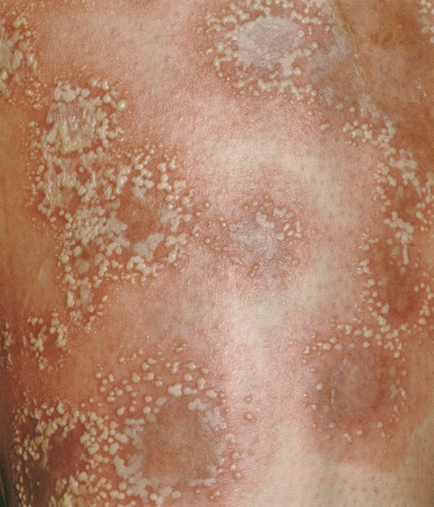
| 選択肢 | 解説 |
|---|---|
| ◯ ａ 膿疱性乾癬 | 尋常性乾癬の既往をもつ患者に、発熱とともに全身の紅斑と無菌性の小膿疱が急速に拡大——汎発性膿疱性乾癬〈GPP〉の典型像である。地図状舌・白血球増多・低アルブミン血症・Kogoj海綿状膿疱はいずれも診断基準の項目そのもの。 |
| ｂ 伝染性膿痂疹 | 黄色ブドウ球菌（またはA群溶連菌）による表在性の皮膚感染症。小児に多く、水疱・びらん・蜜色の痂皮が接触で広がる（とびひ）。本例は細菌培養が陰性で「無菌性膿疱」であり、感染症ではない。 |
| ｃ 疱疹状皮膚炎 | Duhring疱疹状皮膚炎。IgA沈着を伴い、肘・膝・殿部の伸側に強い瘙痒を伴う小水疱・丘疹が集簇する。セリアック病（グルテン過敏性腸症）を高率に合併し、DDSが著効する。膿疱ではなく水疱で、高熱も伴わない。 |
| ｄ Kaposi水痘様発疹症 | 既存の湿疹病変に単純ヘルペスウイルスが広範に播種したもの（Q.29・Q.42）。中心臍窩をもつ小水疱が集簇するが、本例はTzanck試験が陰性（多核巨細胞なし）でHSVを否定している。 |
| ｅ ブドウ球菌性熱傷様皮膚症候群 | 黄色ブドウ球菌の表皮剝脱毒素により顆粒層で表皮が浅く裂ける。乳幼児に多く、口囲の放射状亀裂とNikolsky現象陽性の広範な表皮剝離を来す。膿疱が主病変ではなく、35歳の成人に生じることもまれである。 |
| 疾患 | 膿疱の場所・特徴 | 手がかり |
|---|---|---|
| 膿疱性乾癬 | 全身の潮紅上に散在〜集簇、Kogoj海綿状膿疱 | 高熱・白血球増多・低Alb・地図状舌・乾癬の既往 |
| 掌蹠膿疱症 | 手掌・足底に限局した無菌性膿疱と鱗屑 | 病巣感染（扁桃炎・歯性感染）・喫煙・金属アレルギー、胸鎖肋関節炎（掌蹠膿疱症性骨関節炎） |
| 急性汎発性発疹性膿疱症〈AGEP〉 | 浮腫性紅斑上に多数の小膿疱 | 薬剤投与後数日で急性発症、中止で1〜2週で軽快（Q.59） |
| 角層下膿疱症 | 間擦部の弛緩性膿疱（上下2層に分かれる） | IgA単クローン性γグロブリン血症 |
| 好酸球性膿疱性毛包炎 | 顔面の環状に配列する毛包一致性丘疹・膿疱 | 好酸球増多、インドメタシンが有効 |
| 伝染性膿痂疹・毛包炎 | 膿疱・痂皮 | 培養陽性（黄色ブドウ球菌・溶連菌）＝これだけが感染性 |
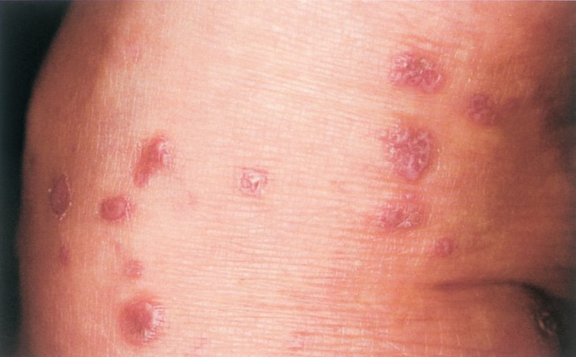
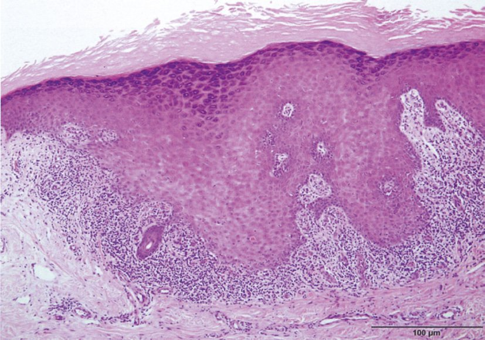
| 選択肢 | 解説 |
|---|---|
| ａ 頭 皮 | 扁平苔癬が頭皮に生じると毛孔性扁平苔癬となり瘢痕性脱毛を残すため確認する意味はあるが、口腔粘膜に比べれば頻度は低く、診断・経過観察上の優先度が下がる。被髪頭部の鱗屑性紅斑といえば尋常性乾癬・脂漏性皮膚炎が主。 |
| ◯ ｂ 口腔粘膜 | 扁平苔癬は皮膚病変の約半数で口腔粘膜病変を合併し、頬粘膜にレース状・網目状の白色線条〈Wickham線条〉を生じる（Q.92・Q.95・Q.97）。粘膜病変は診断を裏づけるだけでなく、びらん型では有棘細胞癌が発生しうるため長期の経過観察を要する。 |
| ｃ 腋 窩 | 腋窩が診断の鍵になるのは、Hailey-Hailey病・化膿性汗腺炎・黒色表皮腫・カンジダ性間擦疹・Darier病など。扁平苔癬の好発部位ではない。 |
| ｄ 背 部 | 背部（正中の脂漏部位）はDarier病・脂漏性皮膚炎・Gibertばら色粃糠疹で見るべき部位。扁平苔癬は四肢屈側（手関節屈側・前腕・下腿）が好発で、背部を特に確認する必然性はない。 |
| ｅ 臍 部 | 臍部は尋常性乾癬の好発部位（機械的刺激を受ける部位）として有名で、Q.87の乾癬性関節炎の症例でも臍部の角化性紅斑が記載されている。扁平苔癬とは結びつかない。 |
| 背景 | 内容 |
|---|---|
| C型肝炎ウイルス | 扁平苔癬との関連が繰り返し報告されている。HCV抗体を確認する |
| 薬剤（苔癬型薬疹） | 降圧薬（ACE阻害薬・βブロッカー・サイアザイド）・金製剤・抗マラリア薬・NSAID・免疫チェックポイント阻害薬。本例は「内服している薬はない」と明記され薬剤性を除外している |
| 歯科金属 | 口腔扁平苔癬では金属との接触部位に一致することがあり、パッチテストで陽性なら補綴物の除去で改善する（Q.30） |
| 移植片対宿主病〈GVHD〉 | 慢性GVHDの苔癬型病変は扁平苔癬に酷似する |
| 疾患 | 決め手 |
|---|---|
| 扁平苔癬 | 多角形・扁平・光沢・Wickham線条・強い瘙痒・口腔粘膜病変 |
| 結節性痒疹 | 搔破による半球状のドーム型結節、中央に痂皮 |
| 尋常性乾癬 | 銀白色の厚い鱗屑・Auspitz現象・伸側好発（Q.93） |
| 菌状息肉症 | 慢性・多形性、病理で異型リンパ球のPautrier微小膿瘍 |
| 扁平苔癬様角化症 | 孤立性、日光露光部、脂漏性角化症からの移行 |
| 病理所見 | なぜそうなるか |
|---|---|
| 錯角化〈parakeratosis〉 | 角層になっても核が残っている。成熟する時間がないまま押し上げられるため |
| 顆粒層の消失・菲薄化 | ケラトヒアリン顆粒を作る段階を飛ばしてしまう |
| 表皮肥厚（棘細胞層の肥厚）と表皮突起の棍棒状・規則的な延長 | 増殖する細胞が増え、表皮が下方へ規則正しく伸びる |
| 真皮乳頭の延長と毛細血管の拡張・蛇行 | 増殖する表皮を養うため血管が伸びる。鱗屑を剝がすと点状出血する＝Auspitz現象の実体（Q.93） |
| Munro微小膿瘍（角層内の好中球集簇） | 角化細胞が出す好中球走化因子（IL-8/CXCL8等）に引かれて好中球が角層まで上がってくる |
| 真皮上層のリンパ球浸潤 | T細胞（Th17）主体の炎症 |
| 選択肢 | 解説 |
|---|---|
| ａ 表皮の海綿状態 | 海綿状態〈spongiosis〉は表皮細胞間の浮腫で、湿疹・接触皮膚炎・アトピー性皮膚炎に特徴的な所見である。乾癬では海綿状態は目立たない。 |
| ｂ 表皮顆粒層の肥厚 | 乾癬では顆粒層はむしろ消失・菲薄化する。角化が速すぎて顆粒層を作る時間がないまま角層になる（錯角化）ためである。顆粒層が楔状に肥厚するのは扁平苔癬で、これがWickham線条の実体である（Q.85）。 |
| ｃ 表皮基底層の液状変性 | 基底細胞の液状変性は界面皮膚炎の所見で、扁平苔癬・エリテマトーデス・多形滲出性紅斑・GVHDで見られる（Q.85）。乾癬では基底層はむしろ増殖が亢進している。 |
| ｄ 真皮浅層の好酸球浸潤 | 好酸球浸潤は薬疹・水疱性類天疱瘡・虫刺症・アレルギー性接触皮膚炎で目立つ。乾癬に浸潤するのは好中球とリンパ球であって好酸球ではない。 |
| ◯ ｅ 角質層下の好中球性小膿瘍 | 角層内（錯角化した角層の中）に好中球が集簇したものがMunro微小膿瘍〈Munro microabscess〉で、尋常性乾癬に特徴的な病理所見である。表皮有棘層上部にできるKogoj海綿状膿疱（膿疱性乾癬）と対で覚える（Q.84）。 |
| 病理所見 | 代表疾患 |
|---|---|
| 海綿状態〈spongiosis〉（表皮細胞間浮腫） | 湿疹・接触皮膚炎・アトピー性皮膚炎・貨幣状湿疹 |
| 錯角化＋顆粒層消失＋Munro微小膿瘍 | 尋常性乾癬 |
| Kogoj海綿状膿疱（有棘層上部） | 膿疱性乾癬（Q.84） |
| 基底細胞の液状変性＋帯状リンパ球浸潤＋顆粒層の楔状肥厚 | 扁平苔癬（Q.85） |
| 棘融解＋異常角化（corps ronds・grains） | Darier病（Q.82） |
| 基底層直上の棘融解性水疱 | 尋常性天疱瘡 |
| 表皮下水疱＋好酸球浸潤 | 水疱性類天疱瘡 |
| 表皮全層壊死＋表皮下水疱 | 中毒性表皮壊死症〈TEN〉（Q.73） |
| 真皮のびまん性好中球浸潤（血管炎なし） | Sweet病（Q.64・Q.80） |
| 隔壁性脂肪織炎／小葉性脂肪織炎＋乾酪壊死 | 結節性紅斑／硬結性紅斑（Q.58・Q.65） |
| 表皮内への異型リンパ球浸潤（Pautrier微小膿瘍） | 菌状息肉症 |
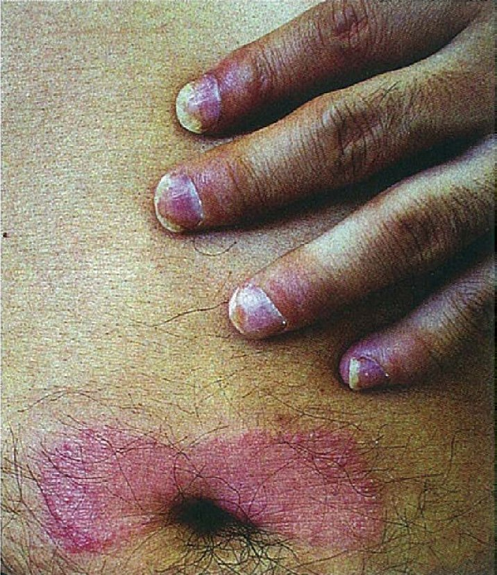
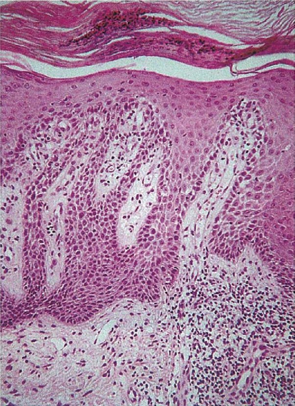
| 乾癬性関節炎 | 関節リウマチ | |
|---|---|---|
| 好発関節 | DIP関節（遠位指節間関節）を侵す・非対称性・脊椎／仙腸関節 | MCP・PIP関節（DIPは侵さない）・左右対称性 |
| RF・抗CCP抗体 | 陰性 | 陽性が多い |
| 特徴的所見 | 指趾炎〈dactylitis：ソーセージ様指〉・付着部炎・X線でpencil-in-cup変形・骨新生 | 朝のこわばり・尺側偏位・スワンネック／ボタン穴変形・X線で骨びらんと関節裂隙狭窄 |
| 皮膚・爪 | 乾癬の皮疹・爪の点状陥凹・爪甲下角質増殖・油滴様変化 | リウマトイド結節 |
| 選択肢 | 解説 |
|---|---|
| ａ 成人Still病 | 弛張熱・関節炎・咽頭痛を三徴とし、発熱時に一致して出没するサーモンピンク疹（リウマトイド疹）を伴う。血清フェリチンの著増が特徴的。境界明瞭な角化性紅斑や爪変形は来さない。 |
| ◯ ｂ 乾癬性関節炎 | 被髪頭部・四肢関節伸側・臍部という乾癬の好発部位に境界明瞭な角化性紅斑があり、爪変形と関節炎を伴い、RF陰性——乾癬性関節炎〈psoriatic arthritis〉である。爪病変を伴う乾癬では関節炎の合併率が高いことも知られる。 |
| ｃ 梅毒性関節炎 | 先天梅毒・第2〜3期梅毒に伴う関節症状。皮疹は第2期の梅毒性バラ疹・丘疹性梅毒疹・手掌足底の梅毒性乾癬で、「乾癬」と名がつくが尋常性乾癬とは別物。梅毒血清反応で確認する。 |
| ｄ 悪性関節リウマチ | 関節リウマチに血管炎を伴い、皮膚潰瘍・多発単神経炎・間質性肺炎などの関節外症状を来す病型。前提として関節リウマチであり、RFは通常陽性。本例はRF陰性で、皮疹も乾癬型である。 |
| ｅ 全身性エリテマトーデス〈SLE〉 | 蝶形紅斑・円板状皮疹・日光過敏・口腔潰瘍・非びらん性関節炎・漿膜炎・腎炎・血球減少。抗核抗体・抗dsDNA抗体・抗Sm抗体陽性、低補体が診断の柱で、境界明瞭な角化性紅斑と爪変形の組合せは合わない。 |
| 段階 | 治療 |
|---|---|
| 軽症（皮膚のみ・少関節） | NSAID、ステロイド外用、活性型ビタミンD3外用、光線療法（ナローバンドUVB・PUVA） |
| 中等症以上 | メトトレキサート、シクロスポリン、アプレミラスト（PDE4阻害薬）、エトレチナート |
| 難治・関節破壊進行例 | 生物学的製剤——TNF-α阻害薬（インフリキシマブ・アダリムマブ）、IL-17阻害薬（セクキヌマブ・イキセキズマブ・ブロダルマブ）、IL-23／IL-12-23阻害薬（グセルクマブ・ウステキヌマブ）、JAK阻害薬 |
| Gibert薔薇色粃糠疹 | 第2期梅毒疹 | |
|---|---|---|
| 初発斑 | あり（herald patch） | なし |
| 手掌・足底 | 出ない | 出る（梅毒性乾癬）——決定的 |
| リンパ節腫脹 | なし | 全身性にあり |
| 配列 | 皮膚割線に一致 | 不規則 |
| 血清 | — | RPR・TPHA陽性 |
| 選択肢 | 解説 |
|---|---|
| ａ 毛孔性紅色粃糠疹 | 毛孔一致性の角化性丘疹が融合して橙赤色の局面をつくり、正常皮膚を島状に residual island として残すのが特徴。手掌足底の橙黄色の角化（keratoderma）を伴う。herald patch も皮膚割線に沿う配列も無い。 |
| ｂ 第2期梅毒疹 | 最も紛らわしく、必ず鑑別すべき疾患。梅毒性バラ疹（体幹の淡紅色斑）・丘疹性梅毒疹・手掌足底の梅毒性乾癬・扁平コンジローマ・梅毒性脱毛を来す。herald patchが無く、全身のリンパ節腫脹を伴い、手掌足底にも皮疹が出る点で区別し、迷ったら梅毒血清反応（RPR・TPHA）を必ず提出する。 |
| ｃ 脂漏性皮膚炎 | 被髪頭部・眉間・鼻唇溝・耳介周囲・前胸部といった脂漏部位に、黄色調の鱗屑を伴う紅斑が慢性に生じる。マラセチアの関与があり、経過は慢性・再燃性で、herald patchや皮膚割線に沿う配列は無い。 |
| ◯ ｄ Gibert薔薇色粃糠疹 | 先行する1個の大きな紅斑落屑性局面（herald patch／初発斑）に1〜2週遅れて、体幹に楕円形の淡紅色斑が多発し、長軸が皮膚割線（Langer線）に一致してクリスマスツリー状に配列する。辺縁の内側を鱗屑が縁取る（collarette scale）のも典型的で、1〜2か月で自然治癒し再発しにくい。 |
| ｅ 自家感作性皮膚炎 | うっ滞性皮膚炎・接触皮膚炎などの原発巣が悪化した後に、離れた部位へ瘙痒性の散布疹が全身性に多発するもの。原発巣（多くは下腿）の存在が前提で、瘙痒が強く、皮膚割線に沿う配列はしない。 |
| 疾患 | 決め手 |
|---|---|
| Gibert薔薇色粃糠疹 | herald patch・皮膚割線に沿う配列・collarette scale・自然治癒 |
| 第2期梅毒疹 | 手掌足底の皮疹・全身リンパ節腫脹・血清反応陽性 |
| 滴状乾癬 | 溶連菌性咽頭炎の1〜3週後、小型の鱗屑性紅斑が全身に散在、ASO上昇。若年に多く自然軽快しうる |
| 体部白癬 | 辺縁が堤防状に隆起し中心が治癒（中心治癒傾向）、KOH直接鏡検で菌糸。herald patchを体部白癬と誤診してステロイドを塗ると異型白癬〈tinea incognito〉になる |
| 薬疹（播種状紅斑丘疹型） | 薬剤歴、瘙痒、全身に融合 |
| ウイルス性発疹症 | 発熱・カタル症状・粘膜疹 |
| 菌状息肉症（紅斑期） | 年余にわたる慢性経過、生検 |
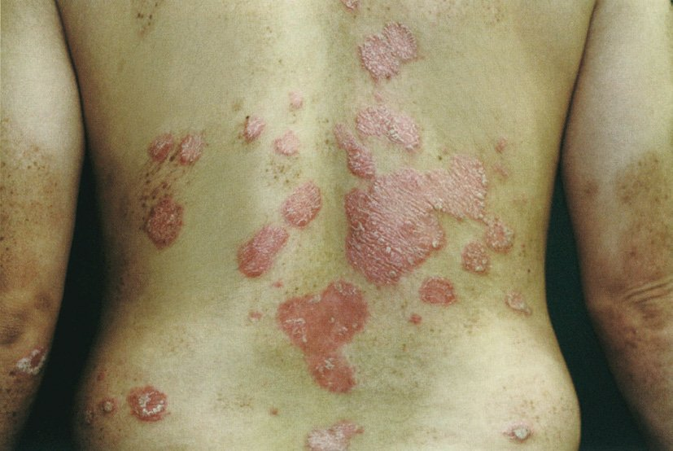
| 選択肢 | 解説 |
|---|---|
| ａ Darier徴候 | 病変を機械的にこすると膨疹・発赤を生じる現象で、肥満細胞症（色素性蕁麻疹）に特徴的。肥満細胞から遊離したヒスタミンによる。Darier「病」（Q.82）とは名前が同じだけで別概念なので注意する。 |
| ｂ Gottron徴候 | 手指関節（MCP・PIP・DIP）伸側の角化性紅斑で、皮膚筋炎に特徴的（Q.60）。ヘリオトロープ疹・近位筋の筋力低下・CK上昇を伴う。本例は関節の「腫脹」であって伸側の紅斑ではない。 |
| ◯ ｃ Köbner現象 | 外傷・擦過・日焼けなど機械的刺激を受けた部位に、その疾患と同じ皮疹が新たに生じる現象。尋常性乾癬の代表的な所見で、肘・膝・腰背部・殿裂といった刺激を受けやすい部位に好発する理由でもある。扁平苔癬・尋常性白斑・扁平疣贅でも陽性（Q.94）。 |
| ｄ Leser-Trélat徴候 | 脂漏性角化症が短期間に多発・急増する現象で、内臓悪性腫瘍（とくに胃癌などの消化器癌）のデルマドロームとされる。乾癬とは無関係。 |
| ｅ Nikolsky現象 | 一見正常な皮膚をこすると表皮が剝離する現象で、TEN・SSSS・尋常性天疱瘡で陽性となる（Q.73）。乾癬では表皮の接着は保たれており陰性。乾癬で鱗屑を剝がすと点状出血するのはAuspitz現象（別概念）。 |
| 名称 | 内容 | 疾患 |
|---|---|---|
| Köbner現象 | 機械的刺激部位に同じ皮疹が生じる | 尋常性乾癬・扁平苔癬・尋常性白斑・扁平疣贅 |
| Auspitz現象 | 鱗屑を剝がすと点状出血する（真皮乳頭の毛細血管が表面近くまで来ているため） | 尋常性乾癬（Q.93） |
| Nikolsky現象 | 正常に見える皮膚をこすると表皮が剝離 | TEN・SSSS・尋常性天疱瘡 |
| Darier徴候 | 病変をこすると膨疹・発赤（ヒスタミン遊離） | 肥満細胞症（色素性蕁麻疹） |
| Gottron徴候 | 手指関節伸側の角化性紅斑 | 皮膚筋炎 |
| Leser-Trélat徴候 | 脂漏性角化症の急激な多発 | 内臓悪性腫瘍（デルマドローム） |
| 針反応〈pathergy〉 | 注射針の刺入部が発赤・膿疱化 | Behçet病（Q.76） |
| Wickham線条 | 病変表面のレース状白色線条 | 扁平苔癬（Q.85） |
| ろう片現象 | 鱗屑をこするとろうを削ったように白くなる | 尋常性乾癬 |
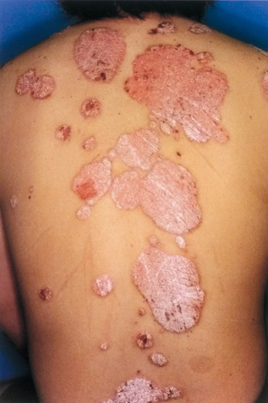
| 病型 | 特徴 |
|---|---|
| 尋常性乾癬 | 全体の約90％。境界明瞭な鱗屑性紅斑 |
| 滴状乾癬 | 溶連菌性咽頭炎の1〜3週後に、小型の紅斑が全身に散在。若年に多く自然軽快しうる |
| 乾癬性紅皮症 | 体表の90％以上が紅斑・落屑。体温調節・体液・蛋白の喪失で全身管理を要する |
| 膿疱性乾癬 | 無菌性膿疱＋発熱。指定難病（Q.84） |
| 関節症性乾癬（乾癬性関節炎） | RF陰性・DIP関節を侵す（Q.87） |
| 選択肢 | 解説 |
|---|---|
| ａ Darier徴候 | 肥満細胞症（色素性蕁麻疹）で見られる、こすると膨疹・発赤を生じる現象。色素性蕁麻疹は褐色の色素斑が主体で、白色鱗屑を伴う紅斑ではない。 |
| ◯ ｂ Köbner現象 | 白色（銀白色）の鱗屑を伴う境界明瞭な紅斑が体幹・四肢に多発する＝尋常性乾癬であり、Köbner現象が陽性となる（Q.89・Q.93・Q.94）。 |
| ｃ Leser-Trélat徴候 | 脂漏性角化症が急激に多発する現象で、内臓悪性腫瘍を示唆するデルマドローム。脂漏性角化症は褐色〜黒色の疣状に隆起した良性腫瘍であり、本例の鱗屑性紅斑とは別物である。 |
| ｄ Nikolsky現象 | TEN・SSSS・尋常性天疱瘡で陽性となる表皮の接着が失われていることを示す所見（Q.73）。乾癬では表皮の接着は保たれる。 |
| ｅ Tinel徴候 | 末梢神経の絞扼部位を叩打すると、その支配領域に放散する痛み・しびれが生じる神経学的所見。手根管症候群（正中神経）・肘部管症候群（尺骨神経）などで診る。皮膚疾患の所見ではない。 |
| 段階 | 治療 | ポイント |
|---|---|---|
| ①外用 | 副腎皮質ステロイド外用、活性型ビタミンD3外用（カルシポトリオール・マキサカルシトール）、両者の配合剤 | ビタミンD3は角化細胞の増殖を抑え分化を促す。高Ca血症に注意し、使用量の上限を守る |
| ②光線療法 | ナローバンドUVB（311nm）、PUVA療法（ソラレン＋UVA）、エキシマライト | T細胞のアポトーシスを誘導。PUVAは長期で皮膚癌のリスク（Q.96） |
| ③内服 | エトレチナート（レチノイド）、シクロスポリン、メトトレキサート、アプレミラスト（PDE4阻害薬）、JAK/TYK2阻害薬 | エトレチナートは催奇形性（女性は投与終了後2年間避妊） |
| ④生物学的製剤 | TNF-α阻害薬、IL-17阻害薬、IL-23／IL-12-23阻害薬 | 難治例・関節症性・膿疱性に高い効果。投与前に結核・B型肝炎のスクリーニングが必須 |
| 皮膚疾患 | 関節症状 | 特徴 |
|---|---|---|
| 尋常性乾癬 | 乾癬性関節炎（10〜30％） | RF陰性・DIP・指趾炎・付着部炎・pencil-in-cup |
| Behçet病 | 関節炎（副症状） | 口腔アフタ・外陰部潰瘍・結節性紅斑様皮疹・ぶどう膜炎（Q.76） |
| Sweet病 | 関節痛（約半数） | 発熱＋有痛性の浮腫性紅色局面＋好中球増多（Q.63） |
| 結節性紅斑 | 関節痛・発熱 | Löfgren症候群＝結節性紅斑＋BHL＋関節炎（Q.58） |
| 皮膚筋炎 | 関節痛 | ヘリオトロープ疹・Gottron徴候・近位筋力低下・悪性腫瘍 |
| SLE | 非びらん性関節炎 | 蝶形紅斑・日光過敏・抗dsDNA抗体 |
| 成人Still病 | 関節炎 | 弛張熱＋サーモンピンク疹＋フェリチン著増 |
| IgA血管炎 | 関節痛 | 下肢の触知可能な紫斑＋腹痛＋腎炎 |
| SAPHO症候群 | 胸鎖肋関節炎・骨炎 | 掌蹠膿疱症・重症痤瘡 |
| 選択肢 | 解説 |
|---|---|
| ◯ ａ 尋常性乾癬 | 乾癬患者の約10〜30％に乾癬性関節炎を合併する（Q.87）。RF陰性・DIP関節を侵す非対称性の関節炎・指趾炎・付着部炎・仙腸関節炎が特徴で、脊椎関節炎の一員である。 |
| ｂ 尋常性痤瘡 | 毛包脂腺系の慢性炎症（面皰・丘疹・膿疱・囊腫）で、関節症状は伴わない。ただし重症型の集簇性痤瘡はSAPHO症候群（滑膜炎・痤瘡・膿疱症・骨過形成・骨炎）の一部として関節症状を伴うことがある——これは例外的な知識である。 |
| ｃ 尋常性白斑 | メラノサイトが自己免疫機序で消失し、境界明瞭な脱色素斑を生じる。自覚症状はなく関節痛も伴わない。甲状腺疾患・悪性貧血・円形脱毛症など他の自己免疫疾患を合併することはある。 |
| ｄ 尋常性魚鱗癬 | フィラグリン遺伝子変異による常染色体顕性遺伝の角化症で、四肢伸側を中心に魚のうろこ状の鱗屑と乾燥を生じる。炎症性疾患ではなく、関節症状とは無縁。アトピー性皮膚炎を合併しやすい。 |
| ｅ 尋常性天疱瘡 | 抗デスモグレイン3抗体による表皮内水疱症。口腔粘膜のびらん・弛緩性水疱・Nikolsky現象陽性が主体で、関節症状は伴わない。 |
| 疾患 | 本態 | 要点 |
|---|---|---|
| 尋常性乾癬 | IL-23／Th17による角化異常 | 銀白色鱗屑・Köbner／Auspitz・爪・関節炎 |
| 尋常性痤瘡 | 毛包脂腺系の慢性炎症（Cutibacterium acnes・アンドロゲン・角栓） | 面皰が原発疹。治療はアダパレン・過酸化ベンゾイル・抗菌薬 |
| 尋常性白斑 | メラノサイトの自己免疫性消失 | 境界明瞭な脱色素斑・Köbner現象陽性・Wood灯で白く光る・甲状腺疾患の合併 |
| 尋常性魚鱗癬 | フィラグリン遺伝子変異・常染色体顕性 | 四肢伸側の鱗屑・掌蹠の皺の増強・アトピー性皮膚炎を合併 |
| 尋常性天疱瘡 | 抗デスモグレイン3抗体 | 口腔びらんで初発・弛緩性水疱・Nikolsky陽性・蛍光抗体直接法で細胞間IgG |
| 尋常性疣贅 | HPV感染 | 手指・足底の角化性丘疹。液体窒素凍結療法 |
| 尋常性狼瘡 | 真性皮膚結核（皮膚に結核菌がいる） | 顔面の褐紅色局面。硝子圧法でapple-jelly nodule（Q.65） |
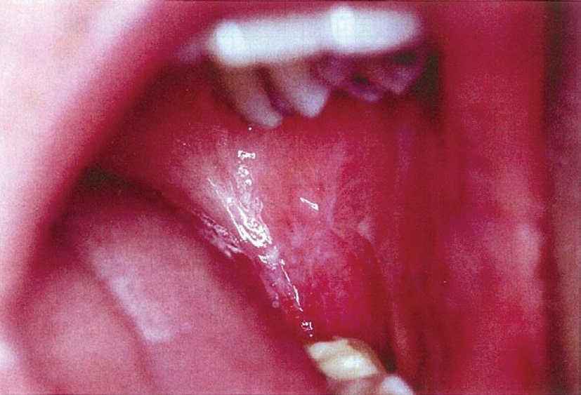
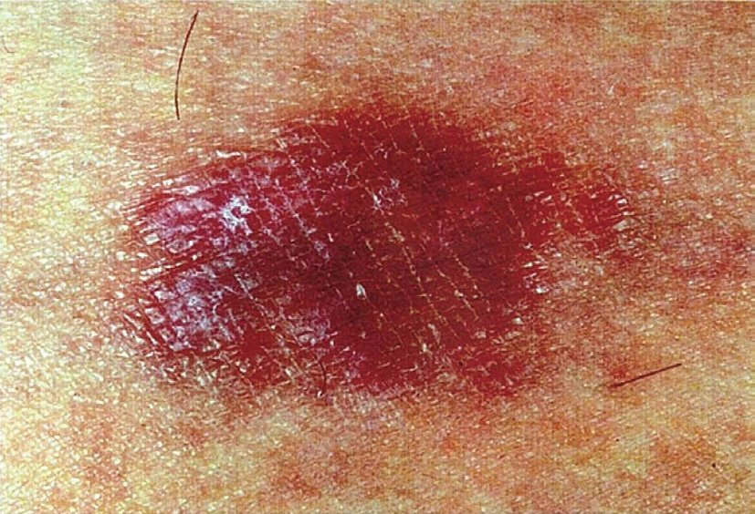
| 病型 | 所見 | 症状 |
|---|---|---|
| 網状型（最多） | 両側頬粘膜にレース状・網目状の白色線条（Wickham線条） | 無症状のことが多い |
| 丘疹型・局面型 | 白色の小丘疹・局面 | 軽度 |
| 萎縮型・紅斑型 | 歯肉に発赤・萎縮（剝離性歯肉炎） | 接触痛 |
| びらん型・潰瘍型 | びらん・潰瘍。周囲に白色線条を伴う | 強い疼痛・摂食障害 |
| 選択肢 | 解説 |
|---|---|
| ａ 白板症 | こすっても除去できない白色の板状病変で、他の疾患に分類できないものと定義される。前癌病変（口腔癌のリスク）であり生検が必要だが、レース状の線条をなさず、四肢に皮疹を伴うこともない。 |
| ◯ ｂ 扁平苔癬 | 両側頬粘膜のレース状白色線条〈Wickham線条〉が数年持続し、遅れて四肢に紫紅色の扁平丘疹が出現——扁平苔癬（口腔病変が先行した典型例）である（Q.85・Q.95・Q.97）。口腔病変は両側性・対称性に出るのが特徴。 |
| ｃ Behçet病 | 口腔病変は「再発性アフタ性潰瘍」であり、有痛性の円形潰瘍が出ては治るのを繰り返す。レース状の白色線条ではない。皮膚症状は結節性紅斑様皮疹・毛囊炎様皮疹で、外陰部潰瘍とぶどう膜炎を伴う（Q.76）。 |
| ｄ 尋常性天疱瘡 | 口腔粘膜のびらんで初発することが多い点は共通するが、病変は「びらん」であって白色線条ではなく、皮膚では弛緩性水疱とびらんを生じる。Nikolsky現象陽性・抗デスモグレイン3抗体陽性で確認する。 |
| ｅ 多形滲出性紅斑 | 四肢末梢に標的状紅斑が急性・左右対称に多発する（Q.60）。3年にわたって粘膜病変が持続するという慢性経過とは相容れない。 |
| 疾患 | ガーゼでこする | 分布 | 要点 |
|---|---|---|---|
| 扁平苔癬 | 取れない | 両側頬粘膜に対称性 | レース状白色線条。びらん型は疼痛と癌化リスク |
| 白板症 | 取れない | 片側・限局 | 前癌病変。均一型より不均一型（紅斑混在）が高リスク。生検 |
| 口腔カンジダ症 | 取れる（下は発赤） | 散在 | 高齢・義歯・ステロイド吸入・抗菌薬・免疫低下。KOH／培養で確認、抗真菌薬 |
| 白色海綿状母斑 | 取れない | 両側びまん性 | 遺伝性・幼少期から・無症状 |
| Koplik斑 | — | 臼歯対側の頬粘膜 | 麻疹のカタル期 |
| 咬傷（頬咬み） | 取れない | 咬合線に一致 | 白色のぼやけた線状 |
| 現象 | 手技 | 見えるもの | 病理的裏づけ |
|---|---|---|---|
| ろう片現象 | 鱗屑を軽くこする | ろうを削ったように白く粉状になる | 錯角化した緩い角層 |
| Auspitz現象 | 鱗屑をさらに剝がす | 点状出血 | 真皮乳頭の延長・毛細血管拡張・乳頭上表皮の菲薄化 |
| Köbner現象 | 健常部を傷つける | そこに新たな乾癬皮疹 | 損傷→LL-37→IFN→IL-23／Th17の点火 |
| 選択肢 | 解説 |
|---|---|
| ◯ ａ Auspitz現象 | 鱗屑を無理に剝がすと点状の出血を生じる現象。乾癬では真皮乳頭が延長し毛細血管が拡張して表面近くまで来ているため、薄くなった表皮ごと鱗屑を剝がすと血管が破れる（Q.86の病理と直結）。 |
| ｂ Darier徴候 | 病変をこすると膨疹・発赤を生じる現象で、肥満細胞症（色素性蕁麻疹）に特徴的。肥満細胞から遊離したヒスタミンによる。Darier病（Q.82）とは無関係の別概念。 |
| ◯ ｃ Köbner現象 | 機械的刺激を受けた部位に同じ皮疹が新生する現象。尋常性乾癬の代表的な所見で、肘膝伸側・腰背部・殿裂といった好発部位を説明する（Q.89・Q.90）。 |
| ｄ Leser-Trélat徴候 | 脂漏性角化症が短期間に急増する現象で、内臓悪性腫瘍（消化器癌など）を示唆するデルマドローム。乾癬とは関係がない。 |
| ｅ Nikolsky現象 | 正常に見える皮膚をこすると表皮が剝離する現象で、TEN・SSSS・尋常性天疱瘡で陽性（Q.73）。乾癬では表皮の細胞間接着は保たれているため陰性。 |
| 名称 | 疾患 | ひとことで |
|---|---|---|
| Auspitz現象 | 尋常性乾癬 | 鱗屑を剝がすと点状出血 |
| Köbner現象 | 尋常性乾癬・扁平苔癬・尋常性白斑・扁平疣贅 | 傷つけた場所に同じ皮疹 |
| Darier徴候 | 肥満細胞症（色素性蕁麻疹） | こすると膨疹（ヒスタミン） |
| Leser-Trélat徴候 | 内臓悪性腫瘍 | 脂漏性角化症が急に増える |
| Nikolsky現象 | TEN・SSSS・尋常性天疱瘡 | こすると表皮が剝がれる |
| 皮膚所見 | 示唆する内臓疾患 |
|---|---|
| Leser-Trélat徴候 | 消化器癌など |
| 黒色表皮腫（悪性型） | 胃癌（良性型は肥満・インスリン抵抗性） |
| 皮膚筋炎 | 悪性腫瘍（卵巣癌・肺癌・胃癌など。成人では必ず検索） |
| 壊疽性膿皮症 | 炎症性腸疾患・関節リウマチ・血液疾患 |
| Sweet病 | 急性骨髄性白血病・骨髄異形成症候群（Q.64） |
| 環状紅斑・遊走性壊死性紅斑 | グルカゴノーマ |
| 汎発性の帯状疱疹・難治性カンジダ | 免疫不全（悪性腫瘍・HIV） |
| グループ | 疾患 | 機序 |
|---|---|---|
| ①真のKöbner現象（炎症性疾患） | 尋常性乾癬・扁平苔癬・尋常性白斑・Duhring疱疹状皮膚炎 | 損傷が自己免疫・自己炎症のループを局所で点火する |
| ②偽Köbner現象（感染性） | 扁平疣贅・伝染性軟属腫 | 掻破で病原体（HPV・伝染性軟属腫ウイルス）が傷口へ機械的に接種される（自家接種） |
| ③示さない | Bowen病・菌状息肉症・悪性黒色腫などの腫瘍性疾患、尋常性狼瘡などの慢性感染症 | 腫瘍細胞や肉芽腫は「傷をつけたら増える」性質を持たない |
| 選択肢 | 解説 |
|---|---|
| ａ Bowen病 | 表皮内有棘細胞癌（上皮内癌）。境界明瞭で不整形の紅褐色局面に鱗屑・痂皮を伴い、緩徐に拡大する。腫瘍性病変であり、外傷部位に新病変が生じることはない。ヒ素曝露・HPVとの関連が知られ、放置すると浸潤癌になる。 |
| ◯ ｂ 扁平苔癬 | Köbner現象が陽性で、引っかき傷に沿って紫紅色の扁平丘疹が線状に配列する（Q.85）。手関節屈側という擦れやすい部位が好発部位であることとも合致する。 |
| ｃ 尋常性狼瘡 | 結核菌が皮膚に実際に存在する真性皮膚結核。顔面に褐紅色の局面が緩徐に拡大し、硝子圧法でapple-jelly nodule（りんごゼリー様結節）を認める。感染症であり、Köbner現象を示す疾患ではない（結核アレルギーの硬結性紅斑はQ.65）。 |
| ｄ 菌状息肉症 | 皮膚T細胞リンパ腫。紅斑期→扁平浸潤期→腫瘍期と年余をかけて進行し、病理で表皮内へ異型リンパ球が浸潤（Pautrier微小膿瘍）する。腫瘍性疾患でありKöbner現象は示さない。 |
| ◯ ｅ 尋常性乾癬 | Köbner現象を示す最も代表的な疾患。損傷を受けた角化細胞がLL-37を放出し、IL-23／Th17の炎症ループに点火するため、肘膝伸側・腰背部・殿裂といった機械的刺激部位に好発する（Q.89）。 |
| 疾患 | 本態 | 要点 |
|---|---|---|
| Bowen病 | 表皮内有棘細胞癌（上皮内癌） | 境界明瞭・不整形の紅褐色局面＋鱗屑。ヒ素曝露・HPV。放置で浸潤癌へ。治療は切除 |
| 尋常性狼瘡 | 真性皮膚結核（皮膚に結核菌がいる） | 顔面の褐紅色局面、硝子圧法でapple-jelly nodule、長期経過で有棘細胞癌が発生しうる。治療は抗結核薬 |
| 菌状息肉症 | 皮膚T細胞リンパ腫 | 紅斑期→扁平浸潤期→腫瘍期。Pautrier微小膿瘍。白血化するとSézary症候群 |
| 扁平苔癬 | 尋常性乾癬 | |
|---|---|---|
| 色調・形 | 紫紅色・多角形・扁平・光沢 | 鮮紅色・境界明瞭・銀白色の厚い鱗屑 |
| 好発 | 四肢屈側（手関節屈側） | 四肢伸側（肘膝）・頭皮・腰背部・臍 |
| 粘膜 | 口腔にレース状白色線条（約半数） | 原則なし（Q.83） |
| 瘙痒 | 強い | 約半数で軽度 |
| 病理 | 基底細胞の液状変性＋帯状浸潤＋顆粒層の楔状肥厚 | 錯角化＋顆粒層消失＋Munro微小膿瘍 |
| Köbner | 陽性 | 陽性 |
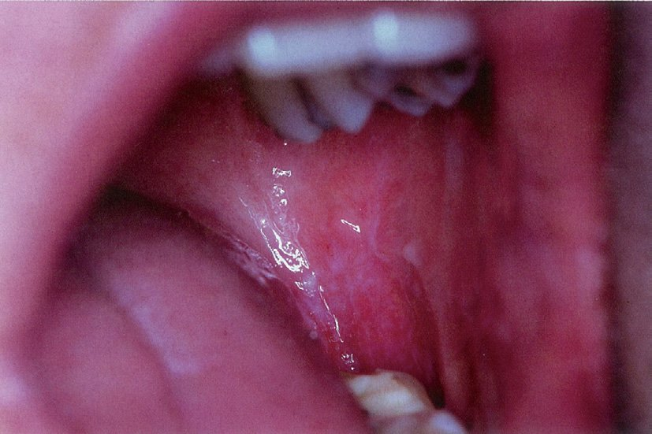
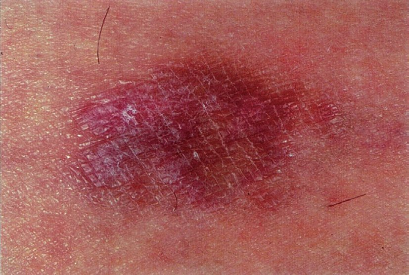
| 選択肢 | 解説 |
|---|---|
| ａ 白板症 | こすっても取れない白色板状病変で、他の疾患に分類できないもの。前癌病変であり生検が要るが、レース状の線条をなさず、四肢の皮疹を伴わない。高齢男性・喫煙者に多い点は本例と重なるので、「網目状か・両側性か」で切る。 |
| ◯ ｂ 扁平苔癬 | 両側頬粘膜のレース状白色線条が3年持続し、遅れて四肢に紫紅色の扁平丘疹が出現——扁平苔癬である（Q.85・Q.92・Q.97）。粘膜と皮膚の両方を診て初めて診断が固まる典型例。 |
| ｃ Behçet病 | 口腔病変は再発性のアフタ性潰瘍であり、3年間持続する白色線条ではない。外陰部潰瘍・ぶどう膜炎・結節性紅斑様皮疹を伴う（Q.76）。 |
| ｄ 尋常性天疱瘡 | 口腔粘膜のびらんで初発することが多い点が紛らわしいが、病変はびらんであって網目状の白色線条ではない。皮膚では弛緩性水疱・びらんが緩徐に拡大し、Nikolsky現象陽性・抗デスモグレイン3抗体陽性となる。 |
| ｅ ヘルペス性歯肉口内炎 | 単純ヘルペスウイルスの初感染で、主に小児が発熱とともに口腔内に多数の小水疱・アフタを生じ、歯肉の発赤腫脹と強い疼痛を伴う。急性の経過（1〜2週で軽快）であり、3年持続する病変とは相容れない。 |
| 項目 | 内容 |
|---|---|
| 本態 | 基底細胞に対する細胞傷害性T細胞の攻撃（界面皮膚炎） |
| 皮疹 | 紫紅色・多角形・扁平・光沢のある丘疹（6つのP）＋Wickham線条 |
| 好発部位 | 手関節屈側・前腕・下腿・腰部。Köbner現象陽性 |
| 粘膜 | 両側頬粘膜のレース状白色線条（皮膚病変の約半数）、外陰・腟、食道 |
| 爪 | 縦線条・菲薄化・翼状片〈pterygium〉・爪甲消失 |
| 頭皮 | 毛孔性扁平苔癬→瘢痕性脱毛 |
| 病理 | 基底細胞の液状変性・帯状リンパ球浸潤・顆粒層の楔状肥厚・鋸歯状の表皮突起・Civatte小体 |
| 背景 | C型肝炎・薬剤（苔癬型薬疹）・歯科金属・慢性GVHD |
| 合併症 | びらん型口腔扁平苔癬からの有棘細胞癌 |
| 治療 | ステロイド外用（強力なもの・必要なら密封）、抗ヒスタミン薬、広範例に光線療法・レチノイド・シクロスポリン、粘膜には局所ステロイド、誘因の除去、定期観察 |
| 方法 | 内容 | 特徴 |
|---|---|---|
| PUVA療法 | ソラレン（P：psoralen）を外用／内服＋UVA照射 | ソラレンがDNAに結合しUVAで架橋を作る。効果は高いが、内服では照射後も一定時間の遮光とサングラス（白内障予防）が必要。長期・累積照射で皮膚癌（有棘細胞癌）のリスク |
| ナローバンドUVB（311nm） | 狭い波長域のUVBのみを照射 | ソラレン不要で簡便、紅斑を起こしにくく、発癌リスクもPUVAより低いため現在の主流。尋常性白斑・アトピー性皮膚炎・菌状息肉症にも用いる |
| エキシマライト（308nm） | 病変部だけに高出力で照射 | 限局性の病変に有効。健常部を照射しない |
| 選択肢 | 解説 |
|---|---|
| ａ 糸状菌感染症である。 | 乾癬は感染症ではない。糸状菌（皮膚糸状菌）による感染症は白癬で、境界明瞭な鱗屑性紅斑という点で乾癬と紛らわしいため、KOH直接鏡検で必ず否定する（Q.89）。名前の「癬」に惑わされない。 |
| ｂ 真皮に好中球が集積する。 | 乾癬で好中球が集まるのは「角層内」（Munro微小膿瘍）と「表皮有棘層上部」（Kogoj海綿状膿疱）であって真皮ではない（Q.86）。真皮にびまん性の好中球浸潤を来すのはSweet病（Q.64・Q.80）。 |
| ｃ 表皮角化細胞の分裂能が低下する。 | 逆で、分裂能は著しく亢進する。ターンオーバーが約45日から3〜4日へ短縮し、未熟な角層が厚く積み上がる（錯角化）。これが銀白色の鱗屑の正体である。 |
| ◯ ｄ PUVA療法が用いられる。 | ソラレン（光感受性物質）を外用または内服してから長波長紫外線〈UVA〉を照射する光化学療法。活性化したT細胞のアポトーシスを誘導し、乾癬の標準的治療の一つである。現在はナローバンドUVB（311nm）がより簡便で主流だが、PUVAも用いられる。 |
| ｅ 副腎皮質ステロイド内服が第一選択である。 | 乾癬にステロイドの全身投与は原則行わない。一時的には効くが、中止・減量時に膿疱性乾癬や乾癬性紅皮症へ悪化させる（リバウンド）（Q.84）。ステロイドは「外用」が第一選択であり、「内服」ではない。 |
| 段階 | 治療 |
|---|---|
| 軽症（BSA 10％未満） | ステロイド外用＋活性型ビタミンD3外用（配合剤） |
| 中等症 | 光線療法（ナローバンドUVB・PUVA） |
| 中等症〜重症 | エトレチナート、シクロスポリン、メトトレキサート、アプレミラスト、JAK/TYK2阻害薬 |
| 難治・関節症性・膿疱性 | 生物学的製剤（TNF-α／IL-17／IL-23阻害薬） |
| 尋常性乾癬 | 体部白癬 | |
|---|---|---|
| 辺縁 | 全体が均一に浸潤・鱗屑 | 辺縁が堤防状に隆起し中心が治癒（中心治癒傾向） |
| 分布 | 左右対称・伸側・頭皮・爪・殿裂 | 非対称・単発〜数個 |
| 検査 | — | KOH直接鏡検で菌糸を証明 |
| 治療 | ステロイド外用 | 抗真菌薬外用（ステロイドを塗ると異型白癬になる） |
| 疾患 | 粘膜所見 |
|---|---|
| 扁平苔癬 | 両側頬粘膜のレース状白色線条（Wickham線条）、びらん型は疼痛と癌化リスク |
| 尋常性天疱瘡 | 口腔粘膜のびらんで初発（皮膚病変に数か月先行することも） |
| 粘膜類天疱瘡（瘢痕性類天疱瘡） | 眼結膜の瘢痕・癒着（失明のリスク）、口腔・咽頭・食道の狭窄 |
| SJS／TEN | 眼・口唇口腔・外陰のびらん（2か所以上）（Q.69） |
| 多形滲出性紅斑（major） | 口唇・口腔のびらん |
| Behçet病 | 再発性アフタ性潰瘍・外陰部潰瘍（Q.76） |
| 膿疱性乾癬 | 地図状舌・溝状舌（Q.84） |
| Darier病 | 口腔粘膜の白色小丘疹（Q.82） |
| 手足口病・ヘルパンギーナ | 口腔内の小水疱・アフタ |
| 麻疹 | Koplik斑 |
| 川崎病 | 口唇紅潮・亀裂、苺舌、眼球結膜充血 |
| 梅毒（第2期） | 粘膜斑・扁平コンジローマ |
| 選択肢 | 解説 |
|---|---|
| ａ うっ滞性皮膚炎 | 下肢静脈瘤・深部静脈血栓後遺症による慢性静脈うっ滞を背景に、下腿下1/3〜足関節周囲に色素沈着・湿疹・硬化を生じる。下肢に限局する疾患で粘膜とは無縁である。 |
| ｂ 硬結性紅斑 | 下腿（とくに後面）の慢性の小葉性脂肪織炎で、結核アレルギー（結核疹）（Q.65・Q.68）。皮下脂肪織の病変であり粘膜疹は生じない。 |
| ｃ 光線角化症 | 日光角化症。長期の紫外線曝露により高齢者の露光部（顔・手背・禿頭）に生じる前癌病変（表皮内癌）で、鱗屑・痂皮を伴う紅褐色斑。紫外線が届かない粘膜には生じない（口唇には光線口唇炎という類縁病態がある）。 |
| ◯ ｄ 扁平苔癬 | 皮膚病変の約半数に口腔粘膜病変を伴い、頬粘膜にレース状の白色線条〈Wickham線条〉を生じる（Q.85・Q.92・Q.95）。外陰・腟・食道の粘膜も侵しうる。 |
| ｅ Gibert薔薇色粃糠疹 | herald patchに続いて体幹に楕円形の紅斑が皮膚割線に沿って多発し、1〜2か月で自然治癒する（Q.88）。粘膜病変はまれ（あっても軽微）で、診断の手がかりにはならない。 |
| 疾患 | 要点 |
|---|---|
| うっ滞性皮膚炎 | 下腿下1/3の色素沈着（ヘモジデリン）・湿疹・浮腫・静脈瘤・脂肪皮膚硬化症。進行すると静脈性下腿潰瘍。治療は圧迫療法（ABIを測って動脈性を除外してから）。自家感作性皮膚炎の原発巣になりやすい |
| 硬結性紅斑〈Bazin〉 | 中年女性・下腿後面・慢性・潰瘍化。小葉性脂肪織炎＋血管炎＋乾酪壊死。結核アレルギー。ツ反／IGRA陽性、抗結核薬が著効（Q.65） |
| 光線角化症（日光角化症） | 高齢者の露光部の前癌病変（表皮内癌）。放置すると有棘細胞癌へ進展。治療は凍結療法・イミキモド外用・5-FU外用・切除。多発例は「フィールドがん化」として面で治療する |
| Gibert薔薇色粃糠疹 | herald patch→皮膚割線に沿う配列→自然治癒。HHV-6／7。第2期梅毒疹との鑑別（Q.88） |
| 経過 | 疾患 | 目安 |
|---|---|---|
| 数分〜数時間 | 蕁麻疹（個疹）・血管性浮腫 | 個々の膨疹は24時間以内に跡形なく消える |
| 数日〜2週 | 固定薬疹・多形滲出性紅斑・SJS/TEN（急性期）・ヘルペス性歯肉口内炎・AGEP | 誘因を除けば軽快へ向かう |
| 数週〜2か月 | 結節性紅斑・Gibertばら色粃糠疹・滴状乾癬 | 自然治癒するのが原則 |
| 数か月〜数年（慢性） | 扁平苔癬・尋常性乾癬・硬結性紅斑・アトピー性皮膚炎・尋常性天疱瘡・菌状息肉症 | 治療でコントロールする疾患 |
| 選択肢 | 解説 |
|---|---|
| ａ 皮疹は紫紅色である。 | 正しい。扁平苔癬の皮疹は特徴的な紫紅色〜暗赤紫色で、6つのPの1つ（Purple）である（Q.85）。 |
| ｂ 扁平な丘疹である。 | 正しい。頂面が平ら（flat-topped）で多角形の扁平な丘疹であり、表面に光沢とWickham線条を伴う。疾患名の「扁平」がこれを指している。 |
| ｃ 痒みがある。 | 正しい。強い瘙痒を伴う（Pruritic）のが扁平苔癬の特徴で、Q.85の症例も「激しい瘙痒を伴う皮疹」と記載されている。 |
| ｄ 口腔粘膜にも生じる。 | 正しい。皮膚病変の約半数に口腔粘膜病変（両側頬粘膜のレース状白色線条）を伴う（Q.92・Q.95・Q.97）。粘膜病変のみで発症することもある。 |
| ◯ ｅ 2〜3週で自然消退する。 | これが誤り。扁平苔癬は慢性の経過をとり、数か月〜数年持続する。皮膚病変は平均1〜2年で軽快することが多いが、口腔病変はさらに長く（10年以上）持続し、消退後に色素沈着を残す。2〜3週で自然消退するのはGibert薔薇色粃糠疹（4〜8週）や多形滲出性紅斑（2〜4週）のような一過性疾患である。 |
| 問われ方 | 該当問題 | 答え |
|---|---|---|
| さらに確認すべき部位 | Q.85 | 口腔粘膜 |
| 症例からの診断（口腔＋四肢） | Q.92・Q.95 | 扁平苔癬 |
| Köbner現象を示す疾患 | Q.94 | 扁平苔癬（＋尋常性乾癬） |
| 粘膜疹がみられる疾患 | Q.97 | 扁平苔癬 |
| 誤っている記述 | Q.98 | 「2〜3週で自然消退」（慢性が正しい） |